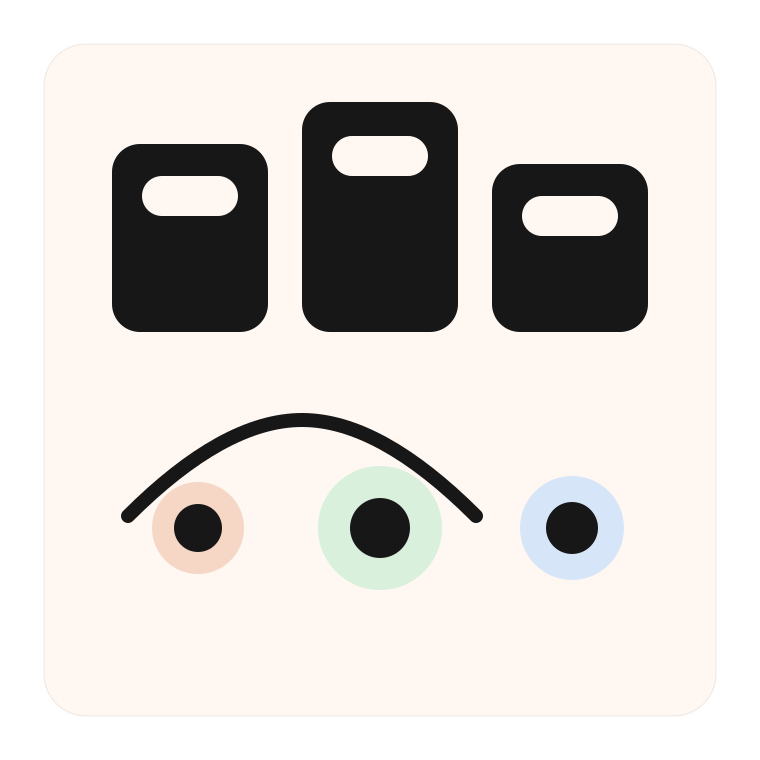
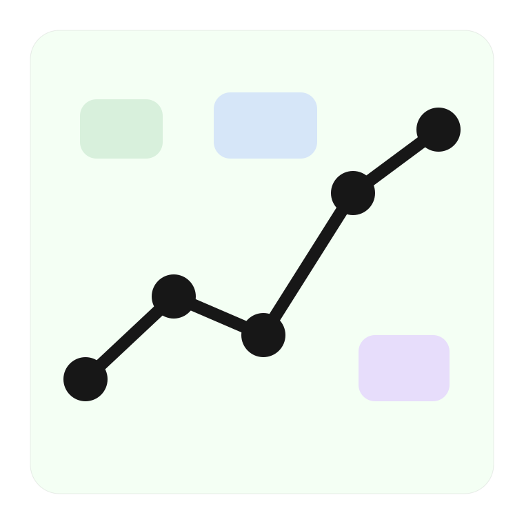
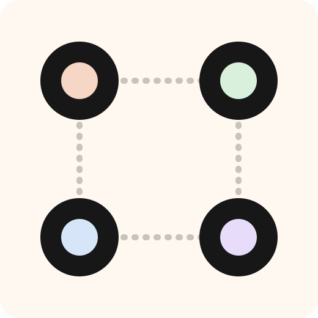
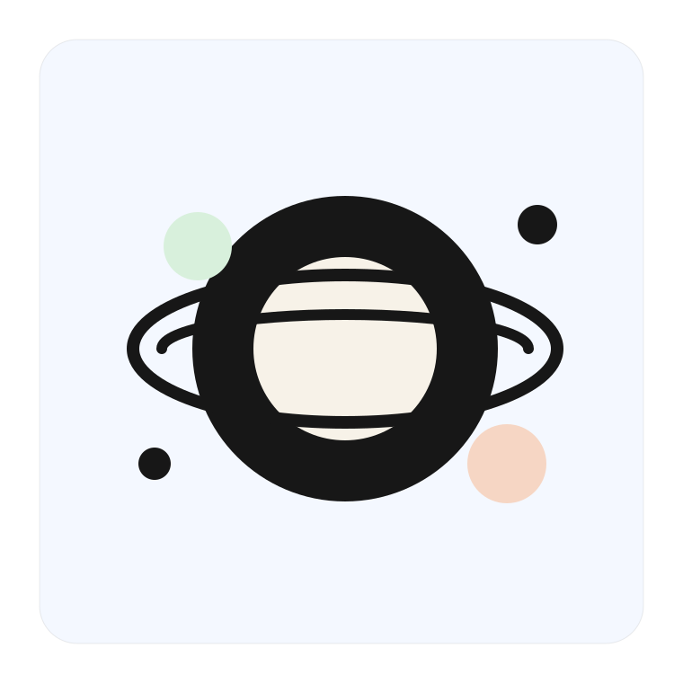

Why It Feels Different
AI 创造者不该等待旧资本
AI 让更少的人做出更大的产品，oneworld 让真正有生产力的团队更早获得支持。
- 先启动第一轮，再用阶段成果打开下一轮
- 不是透支未来，而是用真实进展赢得信任
- 让生产力、资本与流动性接成一条路

Core Advantages
为 AI 团队打造的融资引擎
支持 Angel、Series A、Series B 到 ICO 的阶段推进，让团队先启动、再放大。
- 围绕净融资额展示进度，让真实增长更清晰
- 阶段中允许退出申请，但统一在阶段结束后结算
- 完成 ICO 后，项目直接衔接 Plato Spot Orderbook DEX

For Both Sides
同时服务创造者与支持者
For Creators
让小团队更快起跑
先启动第一轮，让 AI 生产力先进入市场。
在阶段目标达成后，用真实成果打开下一轮。
把融资节奏与产品进展绑定起来。

For Backers
让社区更早识别真实项目
看到真实阶段，而不是未来故事。
清晰理解价格、目标融资和推进条件。
在 ICO 后直接进入现货交易承接路径。
Launch to Trading
让生产力、资本与流动性接通
oneworld 组织早期融资，Plato 承接现货交易，形成连续价值路径。
01Launchpad 负责融资
02Plato 负责交易
03形成价值闭环
